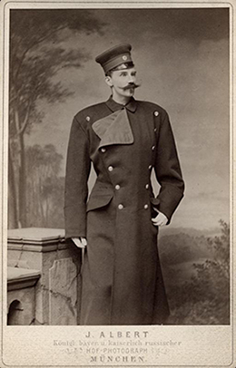
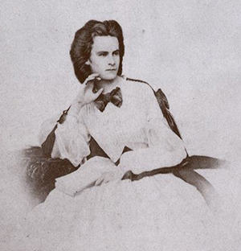
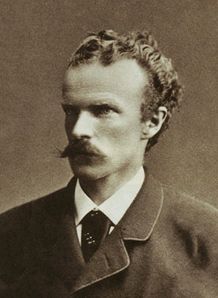
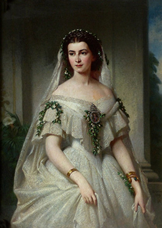
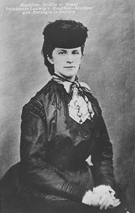
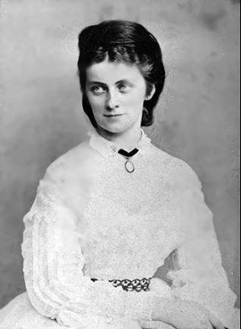
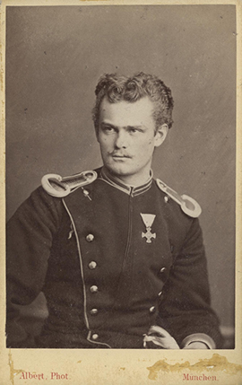

Duke Ludwig Wilhelm in Bavaria
Ludwig Wilhelm (Munich, 21 June 1831 – Munich, 6 November 1920) was Duke in Bavaria.
Ludwig Wilhelm (often called Louis) was the eldest child of Duke Maximilian Joseph in Bavaria and Princess Ludovika of Bavaria and was brother of Empress Sissi.
He renounced his rights as firstborn to marry the actress Henriette Mendel (later Baroness von Wallersee).
Louis became father in 1858 of a daughter Marie Louise Mendel, who, as Marie Louise von Larisch-Wallersee ("jene Gräfin Larisch"), was later involved in the Mayerling Incident.
In 1859 his son Karl Emanuel was born but died shortly after. His wife Henriette died in 1891. Louis remarried the following year, this time to actress Antonie Barth.
Duchess Helene in Bavaria
Helene Caroline Therese, Duchess in Bavaria (4 April 1834 – 16 May 1890) of the House of Wittelsbach, nicknamed Néné, was a Bavarian princess and, through marriage, temporarily the head of the Thurn and Taxis family.
Helene was the oldest daughter of Maximilian Joseph, Duke in Bavaria and Ludovika, Royal Princess of Bavaria. The family home was at Possenhofen Castle.
In 1853 she traveled with her mother Ludovika and her younger sister Elisabeth to the resort of Bad Ischl, Upper Austria with the hopes that she would become the bride of their cousin Franz Josef, then the emperor of Austria. He decided that he preferred Elisabeth instead. Helene was unusually pious, and would have fit into the Habsburg court well. She had one quality, though, that would not have been accepted: she was habitually late, and often missed trains and appointments.
Karl Theodor, Duke in Bavaria
Karl-Theodor, Duke in Bavaria (9 August 1839 – 30 November 1909), was a member of the House of Wittelsbach and a professional oculist. He was the favorite brother of the Empress Elisabeth of Austria, and father of Queen Elisabeth of the Belgians.
Karl-Theodor was born at Possenhofen Castle, the third son of Duke Maximilian in Bavaria and of his wife, Princess Ludovika of Bavaria.
At the age of fourteen Karl-Theodor joined the Bavarian Army. In 1866 he fought in the Austro-Prussian War. When he left active duty, he became a student at the Ludwig Maximilians University of Munich, where he studied philosophy, law, economics, and medicine. Among his teachers were the chemist Justus von Liebig, the pathologist Ludwig von Buhl, and the physicist Philipp von Jolly.
Maria Sophie of Bavaria
Maria Sophie Amalie, Duchess in Bavaria (4 October 1841, Possenhofen Castle – 19 January 1925, Munich) was the last Queen consort of the Kingdom of the Two Sicilies. She was one of the ten children of Maximilian Joseph, Duke in Bavaria and Princess Ludovika of Bavaria. She was born as Duchess Maria Sophia in Bavaria. She was the younger sister of the better-known Elisabeth of Bavaria ("Sisi") who married Emperor Franz Joseph I of Austria.
In the winter of 1857, at the age of 16, Marie's hand was sought by Francis II, Crown Prince of Naples, Duke of Calabria, and the eldest son of Ferdinand II of the Two Sicilies, King of Naples. The marriage was political, since Ferdinand wished to ally himself with the Emperor of Austria, Franz Josef I, a powerful fellow absolutist. At that time the kingdom was already threatened by revolutionary forces. At that time Marie had not experienced menarche, and underwent treatments to induce menses (Hamann 80). She also had to learn Italian. She was married by proxy. In January 1859 she traveled to Vienna to spend time with her sister before they went to Trieste to formally enter her new kingdom, and say farewell to her family on the Neapolitan royal yacht Fulminante. She set sail for Bari and 3 February 1859 was married there. (Hamann 82).
Duchess Mathilde Ludovika in Bavaria
Mathilde Ludovika, Duchess in Bavaria (30 September 1843 – 18 June 1925) was the fourth daughter of Maximilian, Duke in Bavaria and Princess Ludovika of Bavaria. Her mother was the youngest daughter of King Maximilian I Joseph of Bavaria by his second wife Margravine Karoline of Baden.
Born and raised at Possenhofen Castle, Mathilde was a younger sister of (among others) Duke Karl-Theodor in Bavaria, Duchess Elisabeth in Bavaria and Duchess Marie Sophie in Bavaria. She was an older sister of (among others) Duchess Sophie in Bavaria.
On 5 June 1861, Mathilde married Lodovico, Count of Trani. He was heir presumptive to his older half-brother Francis II of the Two Sicilies. Francis was married to her older sister Marie Sophie. The bride was seventeen years old and the groom was twenty-two. They had one child, a daughter:Princess Maria Teresa Maddalena of Bourbon-Two Sicilies.
Duchess Sophie Charlotte in Bavaria
Duchess Sophie Charlotte Augustine in Bavaria (23 February 1847 – 4 May 1897) was a granddaughter-in-law of King Louis-Philippe of France, the favourite sister of Empress Elisabeth of Austria and fiancée of King Ludwig II of Bavaria.
Sophie Charlotte was born at the Possenhofen Castle, the residence of her paternal family, Dukes in Bavaria. She was a daughter of Duke Maximilian Joseph in Bavaria (1808–1888) and Princess Ludovika of Bavaria. The ninth of ten children born to her parents, she was known as Sopherl within the family.
Sophie died in a fire at the Bazar de la Charité in Paris on 4 May 1897. She had refused rescue attempts, insisting that the girls working with her at the bazaar be saved first. Attempts to have her body identified by her personal maid having failed, her dentist, M. Lavanport, was called in. After two hours examining various bodies he identified hers on the basis of her gold fillings.
Duke Maximilian Emanuel in Bavaria
Duke Maximilian Emanuel in Bavaria, full German name: Maximilian Emanuel, Herzog in Bayern (7 December 1849 in Munich, Kingdom of Bavaria – 12 June 1893 in Feldafing, Kingdom of Bavaria) was a Duke in Bavaria and member of the House of Wittelsbach. Maximilian Emanuel was the tenth and youngest child of Duke Maximilian Joseph in Bavaria and his wife Princess Ludovika of Bavaria. Maximilian Emanuel was the brother of Elisabeth of Bavaria, Empress of Austria and Queen of Hungary.
Maximilian Emanuel married Princess Amalie of Saxe-Coburg and Gotha, fourth child and second eldest daughter of Prince August of Saxe-Coburg and Gotha and his wife Princess Clémentine of Orléans, on 20 September 1875 in Ebenthal, Lower Austria, Austria–Hungary. Maximilian Emanuel and Amalie had three sons.